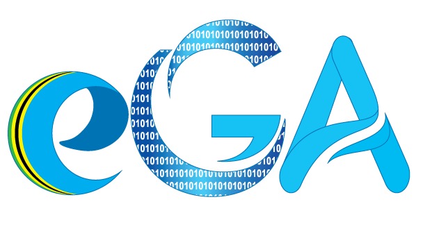

NURU is a personal AI assistant for Tanzanian government officials: it listens in English or Swahili, operates government systems on screen where you can watch, and asks before anything consequential.

How to read thisLeft to right: what runs on your device, what runs on the NURU backend, and the outside services it calls. Hover to highlight; click any box or arrow for details.